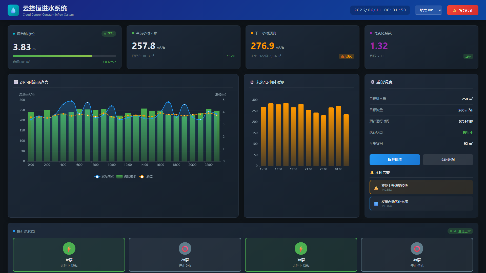

附加案例 · 吴迪（总工）——水务监控大屏
🖥️ 现场演示（本地HTML，秒开）
🏗️ 总工 · 1人
做了什么
用 AI 写了一个
水务实时监控大屏
——云控恒进水系统。
1095 行纯前端代码
，碎片时间完成。
碎片
AI 耗时
1人月
传统估时
1095
行代码
系统规模
单页大屏——
4 大实时数据卡片
→ 2 个 ECharts 图表 → 调度面板 → 实时告警 →
AI 权重优化建议引擎
信号
"连总工都在亲手写代码。这不是研发部的事，是每个人的事。"

"连总工都在亲手写代码。这不是研发部的事，是每个人的事。"